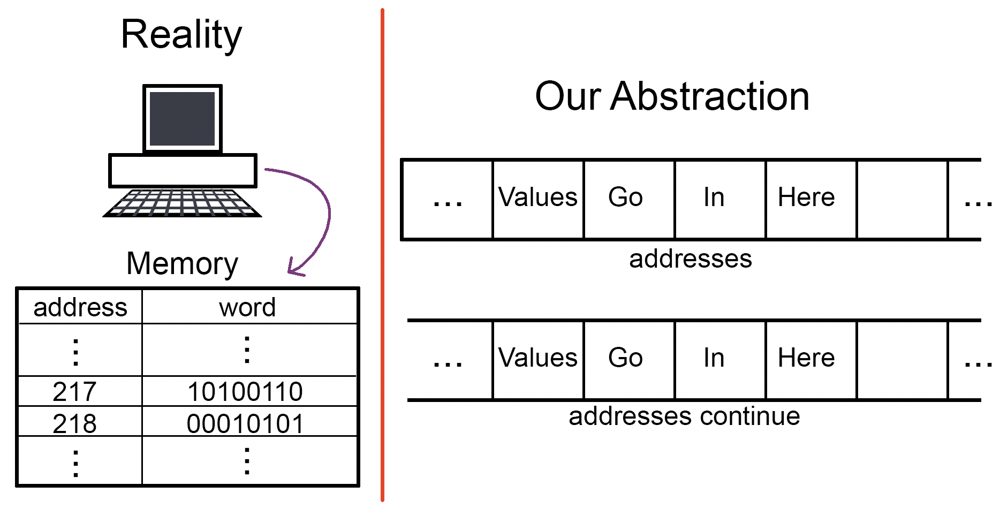
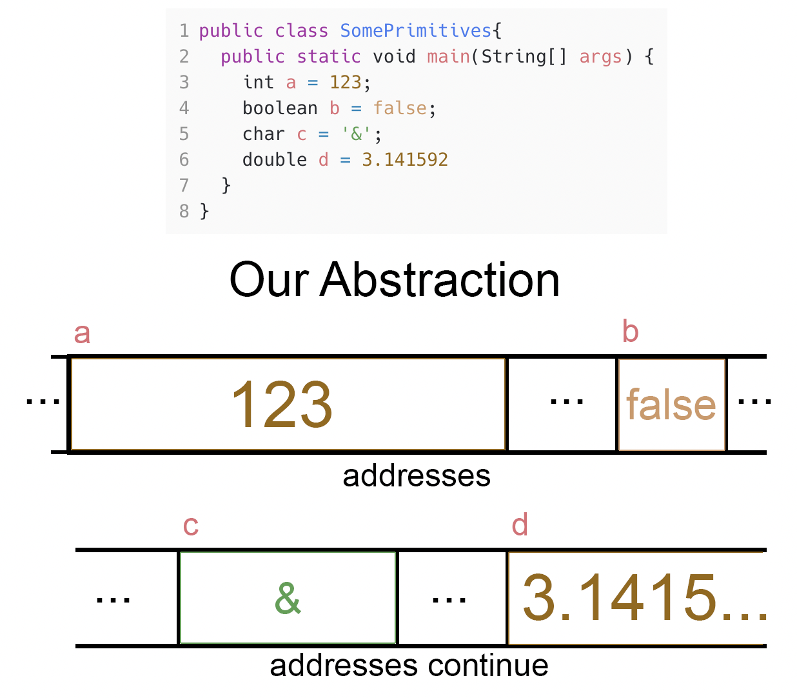
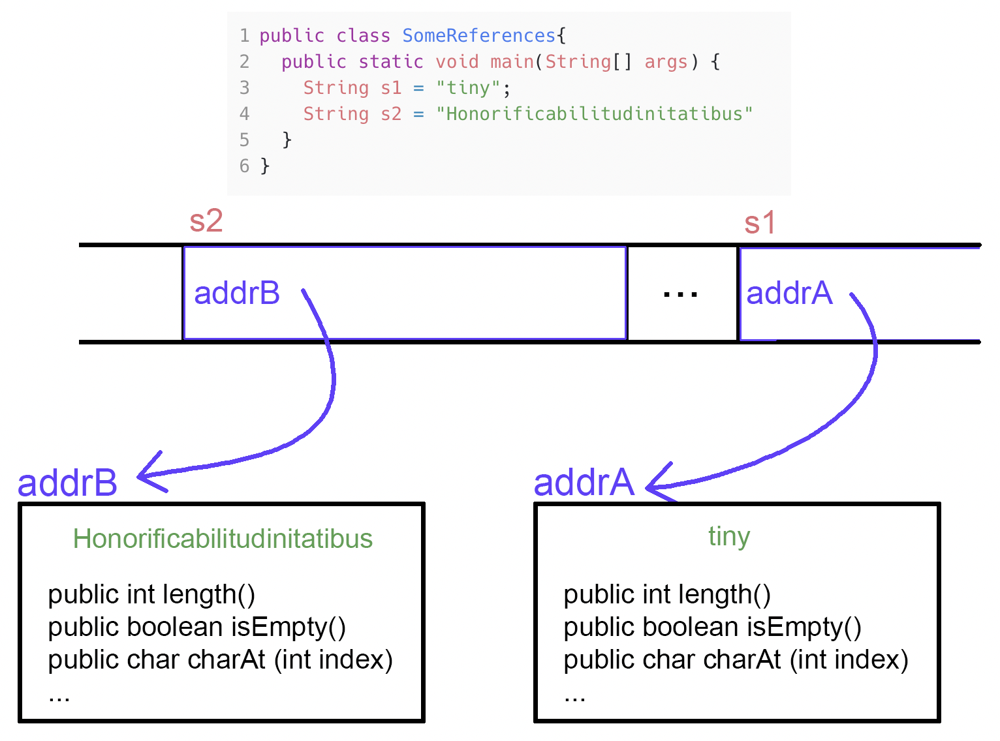
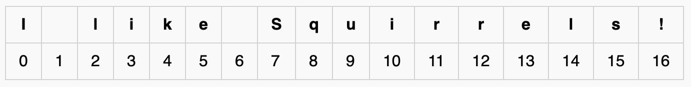

Lecture Notes 09: The String API, and Primitive types vs Reference types.
Objectives
By the end of this module, for simple programs, you will be able to:
- Demonstrate declaration of String variables;
- Demonstrate use of important String methods;
- Demonstrate use of String operators;
- Demonstrate char extraction from String;
- Demonstrate String manipulation;
- Identify new syntactic elements related to the above.
Before Starting
- Read Sections 9.01 to 9.03 in the Codio Course
If you do not have your Codio course ready, use any text editor or simple IDE. Some possibilities are:
- Write using Sublime; Compile and run in the Terminal
- Use IDEs like: IntelliJ, DrJava, or JGrasp
Catching Up
Before we move forward, let's catch up (complete any remaining work from the previous module)
In this case, make sure we've got:
- Characters and ASCII, and how to concatenate with strings
The Two Main Categories of Types
As mentioned in the previous class, Strings have an API (Application Programming Interface), which describe the set of rules for using Strings in the programming of an application.
but why do we need to know the rules for using Strings?
Because Strings are different than the other types we've seen, like int, double, float, boolean, and char.
Before we move forward, let's look at how memory works in a computer and how we will imagine it for the duration of the class:

- Each box holds a "word", which is a number of bits (0's or 1's).
- The size of the word varies, but modern OSs use word sizes of 8 bits (a Byte), 16 bits, 32 bits, and 64 bits.
- For our in-class example, we'll use the simple word of one Byte (8-bits).
Primitive types:
The following are called "Primitive Types": int, float, double, boolean, and char.
They are called "Primitive" because the function they perform is extremely simple:
They are locations in memory inside of which you save the actual value you need.
How are these values saved?
The computer remembers where we are placing a value (the address) and the type of that value. Then, it interprets the zeroes and ones as a value for one of these types.
- The most simple is the boolean, which needs a single bit to denote true or false.
- Then, we have the byte, which needs a single Byte (duh!). 8 bits allows you to cover:
2^8 = 256 different symbols.
- Then, we have the char, which in Java uses two Bytes. This allows the coverage of the large set of Unicode characters. ASCII actually needs only 7 bits.
- The int uses 32 bits (4 Bytes). That means that, when saving a variable of type int, the computer uses 4 words (or 4 boxes) in a row. That also means that the range of values for an int is: -2^{31} to 2^{31} which covers -2,147,483,648 to 2,147,483,648. It uses 31 bits for the magnitude and 1 bit for the sign.
- We also have the type short, which is for small integers, and it uses 2 Bytes, covering the range:
-2^{15} to 2^{15} which covers -32,768 to 32,767.
- For larger integers than usual, we have the type long, and it uses 8 Bytes, covering the range:
-2^{63} to 2^{63} which covers -9,223,372,036,854,775,808 to 9,223,372,036,854,775,807.
- For real-valued numbers, we have the type float, which uses 4 Bytes using the floating-point description. covering the range:
1.40239846 x 10^{-45} to 3.40282347 x 10^{38}
- The standard type for real-valued numbers is the double, which uses 8 Bytes using the floating-point description. covering the range:
4.9406564584124654 x 10^{-324} to 1.7976931348623157 x 10^{308}
An Example using our Abstraction:
Look at the program and the abstraction of how we store the variables.

Note:
- The computer saves the values in contiguous words (like for int, char, and double), but it does not necessarily save the variables next to each other, or even in order.
So: Primitive types are locations in memory that hold the values we care about.
"But what else woulld you save in there?" you ask...
That's where the other catergory comes in.
Reference types:
As we will see later in the semester, we will be creating objects that contain so much information that it does not make sense to save them inside the box or space assigned to a variable.
Instead, we use a clever mechanism: We leave a forwarding number!, or in other words, the address of where we are keeping the object's information.
When we make a variable of a Reference type, like String, inside the variable, instead of saving the String value, we save the address of the starting location where we are going to keep more information about the value or values of that type.
An Example using our Abstraction:
Look at the example shown below:

Note:
- The computer saves the address inside the variable.
- The address is actually of size 32 or 64 bits, that's why I show it inside a variable with a large-sized box.
- The particular strings that were declared and initialized are inside Objects that have, in addition to the series of characters that compose the String, Methods that we may interact with to perform actions with these objects.
- Objects are stored in another section of memory (enough said).
The String API
The String API is the list of methods that each of these objects provide.
Today, we'll show you how to find and use some of the typical String methods.
First, open this page in a different tab: Java 11 - String API.
You'll notice several things:
- A description in the top
- A set of Constructors (to be discussed in a future module)
- A secction called "Method Summary", with the basic description of each Method.
- A set of detailed descrciptions of each method.
Today, we'll use the following String methods:
- length()
- isEmpty()
- charAt(<something in here>)
- indexOf(<something in here>)
- substring(<something in here>)
- substring(<something in here>, <something there too>)
Sneak Peek into Methods with Inputs and Outputs
So far we have written methods that do not need any input nor return any output.
However, we have been using methods that do both.
In this section, we will use String methods that
- Return values, and
- require input parameters to do their job properly
The simple rules are:
- Return values are what the method call resolves to.
- Input parameters are placced inside the parenthesis that follow the method's name.
Examples follow below:
1
2
3
4
5
6
7
8
9
10 |
public class StringMethods
{
public static void main(String args[])
{
String s1 = "The future ain’t what it used to be.";
// Takes no parameters and returns 36
int s1Length = s1.length(); // s1.length() resolves into 36
System.out.println ("The length of s1 is: " + s1Length);
}
}
|
Activity 1:
In
StringMethods.java
write the above program and see what gets printed.
Now, examine the following block of code:
9
10
11
12
13
14
15 |
String s2 = "";
// Takes no parameters and returns 0
int s2Length = s2.length(); // s2.length() resolves into 0
System.out.println ("The length of s2 is: " + s2Length);
// we can call String methods inside the print!
System.out.println ("Is s2 empty? " + s2.isEmpty());// s2.isEmpty() resolves into true
|
Activity 2:
In
StringMethods.java
add these instructions to the program and see what gets printed.
String indices
Each character in a string has its own "location" or "index".
The following is a visualization of the indices for the string:
I like Squirrels!

In this example, you can see that:
- the indices begin at 0!
- there is one index for each character
- the size of the string is one more than the last index!
Now, lets play with some methods related to indices!
Look at the code below:
16
17
18
19
20
21
22
23 |
String s3 = "I like Squirrels!";
// Takes no parameters and returns 26
int s3Length = s3.length(); // s3.length() resolves into 26
System.out.println ("The length of s3 is: " + s3Length);
// Let's see what character is at index 7. 7 is an explicit integer input
char c7 = s3.charAt(7);// s3.charAt(7) resolves into 'S'
System.out.println ("Character at index 7 in s3 is " + c7);
|
Activity 3:
In
StringMethods.java
add these instructions to the program and see what gets printed.
We can do the inverse search!.
What is the index for some character:
24
25
26
27 |
// what is the index for the letter 'q'. 'q' is an explicit charater input.
int qIndex = s3.indexOf('q');// s3.indexOf('q') resolves into 8
System.out.println ("Index for character 'q' in s3 is " + qIndex);
|
Activity 4:
In
StringMethods.java
add these instructions to the program and see what gets printed.
Activity 5:
In
StringMethods.java
Modify the code to search the following:
- the index for the letter 'x'
What do you get?
Activity 6:
In
StringMethods.java
Modify the code to search the following:
- the index for the letter 'r'
What do you get?
Activity 7:
In
StringMethods.java
Modify the code to search the following:
- the index for the letter 'i'
What do you get?
Substrings
We can extract parts of a string.
Observe the following piece of code:
28
29
30
31
32 |
int beginIndex = 7;
// Extract everything after index beginIndex. Input is now a variable.
String sub1 = s3.substring(beginIndex);// s3.substring(beginIndex) resolves into "Squirrels!"
System.out.println ("The substring from index " + beginIndex + " to the end in s3 is " + sub1);
|
Activity 8:
In
StringMethods.java
add these instructions to the program and see what gets printed.
Note that the beginIndex is
inclusive (includes the character at the beginIndex).
We can also indicate a final index for the substring.
Observe the following piece of code:
33
34
35
36
37
38
39 |
int endIndex = 11;
// This method takes two inputs
// below, s3.substring(beginIndex, endIndex) resolves into "Squi"
String sub2 = s3.substring(beginIndex, endIndex);
System.out.println ("The substring from index " + beginIndex + // continues below
" to index " + endIndex + " in s3 is " + sub2);
|
Activity 9:
In
StringMethods.java
add these instructions to the program and see what gets printed.
Note that the final index is
non-inclusive or
exclusive (does not include the character at the endIndex).
Once we have worked with
Conditionals, we will see examples some of the characteristics of objects that make them very different than primitive variables.
Method calls on Explicit Strings
We can actually call String methods on explicit strings, like in the example show below:
1
2
3
4
5
6
7
8
9 |
public class ExplicitStrings
{
public static void main(String args[])
{
System.out.println("explicit string".length());
System.out.println("endogamy".substring(2,5));
}
}
|
Try it out!!
The only difference is that were operating on the explicit string instead of a String in a saved variable.